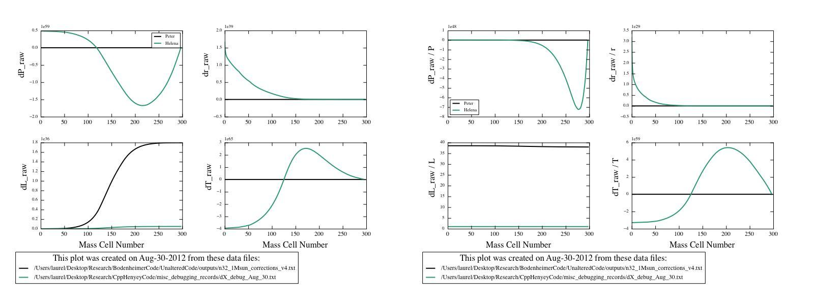

Date & Time: Aug. 30, 2012
Location: campus
Computing context: MachoMac
(/Desktop/Research/CppHenyeyCode/src, /Desktop/Research/BodenheimerCode/UnalteredCode)
From last time:
The dX values generated by the two codes still differ markedly, though.
Insert a figure illustrating the existing dX differences
And start trying to figure out what's still causing them.
It's got to be something in how Helena's CDE values are being calculated. So, need to figure out a way to compare those between the two codes.
Print out the CDE values from Helena
Print out the CDE values from Peter's code
Look at the Peter/Helena ratios
examine by plotting
To do today:
From comparing the CDE values between the two codes, it looks like the i/k indices are switched within my code
I recall switching them back and forth before, prior to discovering the G4J problem that kind of obscured precisely what was going haywire in there.
Results of switching around the i/k indices for those matrices in Helena: still wonky. The size of the raw corrections Helena is calculating is unrealistically huge. See Figure 1, below:

Notice the values on the y-scales for the raw dP
(1e59), dr (1e39), and dT (1e65) corrections.
Figure
1
It also looks like the CDE values differ by a factor of -1 between codes
Not sure if that's playing a role in my wonky results or not, but will check on that if switching the i/k indices on the CDE matrix values around fails to fix things.
Tried that, and Helena still gives unrealistically large dX values, of the same scale as before.
The G values mostly agree between the two codes, except at the outer mass cell
Set the outermost G values (in Helena) to the values they have in Peter's code, and see what (if any) difference that makes.
Result: doesn't make a bit of difference. The dX values from Helena are still huge.
Also tried additionally setting the jMax-1 mass cell values of CDE to Peter's values.
It also failed to make a bit of difference.
Update the wordpress blog.
To keep in mind for later:
For the 1 Mjup model: do the Peter and Helena models' dX values (raw) now agree, too?